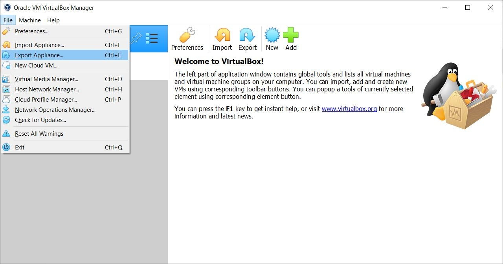
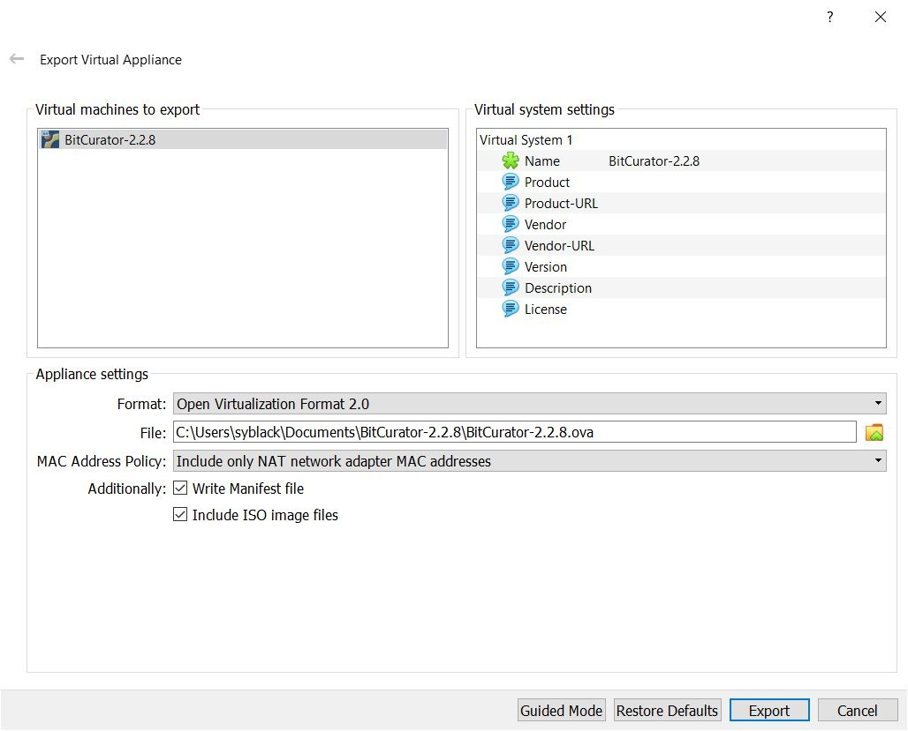
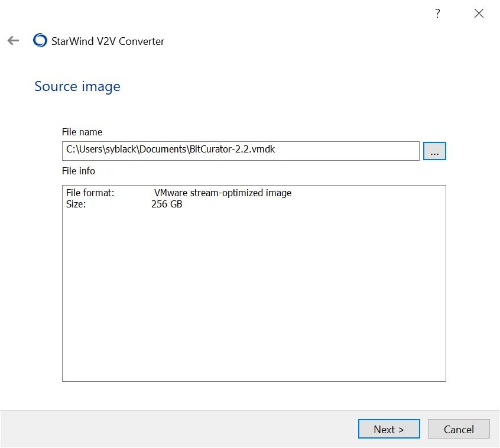
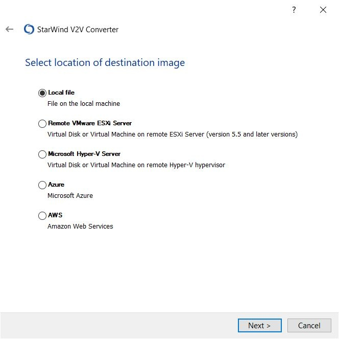
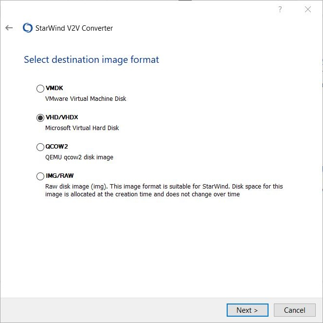
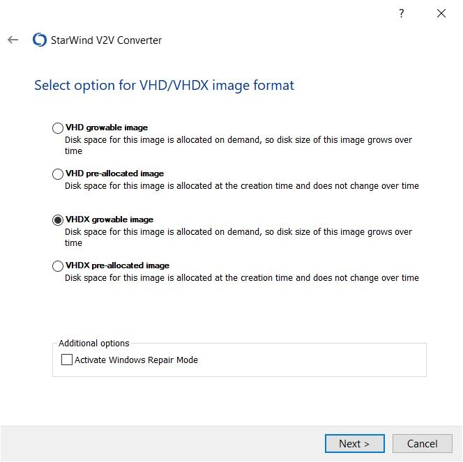
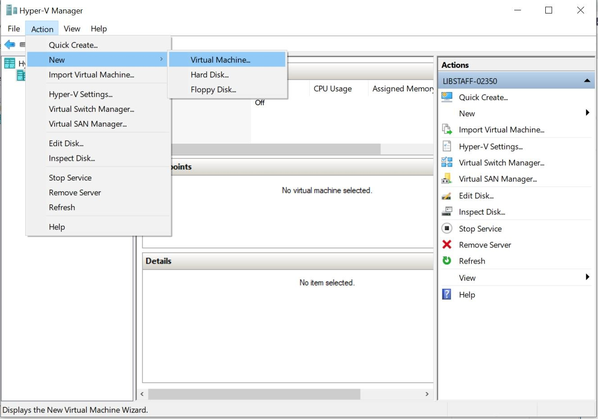
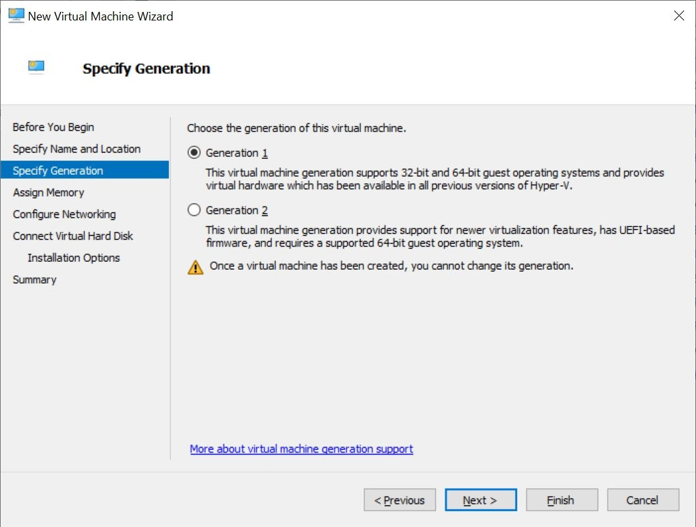
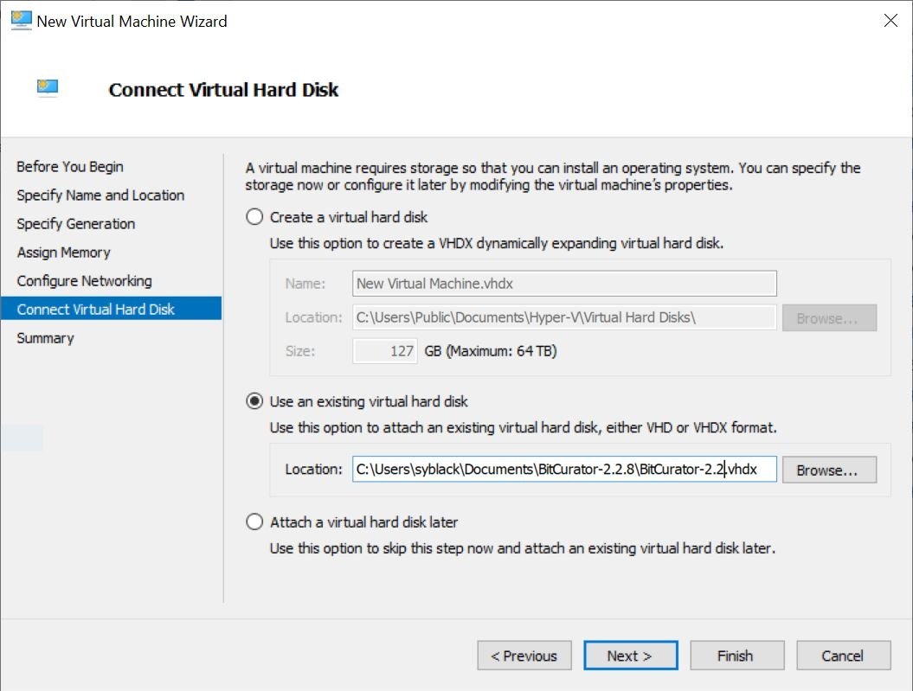

Migrating BitCurator VirtualBox VM to Hyper-V
Overview
These instructions were provided by Shelly Black, North Carolina State University Libraries.
Note that VirtualBox VM is a cross-platform virtualization application and Hyper-V cannot handle non-Windows operating systems.
System Requirements for Hyper-V
The Hyper-V role can be enabled on these versions of Windows 10:
- Windows 10 Enterprise
- Windows 10 Pro
- Windows 10 Education
The Hyper-V role cannot be installed on:
- Windows 10 Home
- Windows 10 Mobile
- Windows 10 Mobile Enterprise
Not a complete list, but the following items are necessary according to Hyper-V documentation from Microsoft:
- 64-bit Processor with Second Level Address Translation (SLAT).
- CPU support for VM Monitor Mode Extension (VT-x on Intel CPU's).
- Minimum of 4 GB memory.
The following items will need to be enabled in the system BIOS:
- Virtualization Technology - may have a different label depending on motherboard manufacturer.
- Hardware Enforced Data Execution Prevention.
Migration Instructions
- Download BitCurator VM and Oracle Virtualbox, plus VirtualBox Extension Pack, and ensure BitCurator opens in VirtualBoxSee installing BitCurator via virtual machine instructions2. Export .vbox to .ova using VirtualBox (“Write Manifest file” and “Include ISO image files” should be checked)
Figure 1: Within File, navigate to Export Appliance

Figure 2: Select the BitCurator VM

Figure 3: "Write Manifest file" and "Include ISO image files" should be checked
3. Extract .ova in Terminaltar -xvf BitCurator-2.2.8.ova
- Convert .vmdk to .vhdx growable image using Starwind V2V ConverterUse Starwind V2V Converter, a tool for cloning and transforming VMs from one format to another.

Figure 4: Select local file as location of image to convert

Figure 5: Select file name and file info

Figure 6: Select local file as location of destination image

Figure 7: Select VHD/VHDX Microsoft Virtual Hard Disk as destination image format

Figure 8: Select VHDX growable image as VHD/VHDX image format
- Use Hyper-V New Virtual Machine Wizard (NOT Quick Create) and specified Generation

Figure 9: From the Action menu, navigate to New, and Virtual Machine

Figure 10: Within Specify Generation menu, choose the generation of the virtual machine

Figure 11: Within Connect Virtual Hard Disk menu, select "Use an existing virtual hard disk"
Troubleshooting
- For addressing internet connectivity issues, create a New Virtual Switch if VM does not connect to the Default Switch used for other VMs.
- Potential errors when extracting ova file using 7zip
- Converted to vhd growable image, but couldn’t open in Hyper-V when using Quick Create
- Repeated above but extracted ova in Terminal, got similar error in Hyper-V, even with secure boot on or off
If you would like to provide feedback for this page, please follow this link to the BitCurator Wiki Google Form for the Installing BitCurator section.